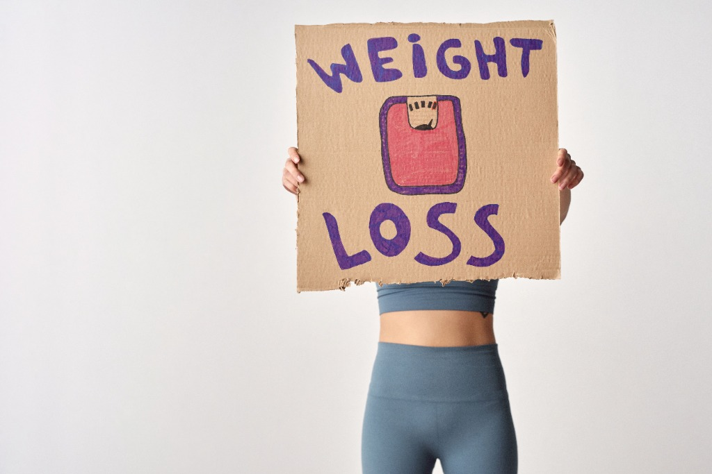

5 Critical Mistakes Keeping Your Metabolism "Frozen" After 40 (And the Cellular Enzyme Switch That Finally Re-Ignites Resting Fat Burn)

If you have celebrated your 40th birthday and noticed that your body no longer responds to diet and exercise the way it used to, you are not imagining things.
In your 20s and early 30s, getting in shape was relatively predictable: you skipped pudding for ten days, walked a little more, cut back on weekend takeaway, and the pounds came right off.
Today? You can eat 1,200 calories of grilled chicken and salad, hit 10,000 steps every day, cut out wine completely—and the bathroom scales will refuse to budge a single millimetre.
Most doctors and generic fitness influencers will tell you the same dismissive advice: "Just eat less, move more, and accept that your metabolism slows down with age."
That advice is biologically flawed.
The reason your weight won’t drop is not that you need to starve yourself further or spend another hour on the treadmill. The real culprit is an invisible cellular shutdown happening deep inside your tissues: the deactivation of your master metabolic enzyme, AMPK, paired with an age-related collapse in natural gut-satiety signalling (GLP-1).
Here are the 5 fatal mistakes men and women over 40 make when trying to restart a stalled metabolism—and the clinically documented botanical synergy that reactivates cellular energy expenditure and restores day-long vitality without caffeine jitters.
Slashing Calories Below Your Basal Metabolic Rate (Forcing "Cellular Hibernation")
When the scales stop moving at 42, 48, or 55, the automatic impulse is to cut calories even lower: dropping from 1,800 to 1,500, and finally down to 1,200 calories per day.
In midlife biology, this backfires dramatically:
- Adaptive Thermogenesis: Your thyroid and mitochondrial energy outputs downregulate immediately. When your cells sense an extreme calorie deficit during a period of natural hormonal shifts, they treat it as an existential famine threat.
- The "Starved Engine" Paradox: Instead of burning stored body fat, your cells slow resting energy expenditure to an absolute crawl.
- Severe Diet Fatigue: You end up feeling depleted, weak, and cold, suffering from profound physical and mental exhaustion, whilst stubborn visceral fat stays locked in place.
Cutting intake without addressing your cellular machinery simply starves your tissues. What a mature metabolism needs is not deeper restriction, but a biochemical signal that orders dormant cells to release and oxidise stored lipids for fuel.
Relying on High-Dose Caffeine and Commercial "Fat Burners"
When sluggishness sets in, many adults over 40 start leaning heavily on afternoon espressos, energy drinks, or commercial thermogenic fat-burner pills.
Whilst concentrated stimulants can artificially spike your central nervous system for an hour or two, they create severe metabolic wreckage in a mature body:
- The Jitter & Anxiety Cycle: Overstimulating ageing adrenal pathways floods your bloodstream with stress hormones, triggering nervous restlessness and elevated resting heart rates.
- Digestive Irritation & Sleep Fragmentation: Harsh synthetic stimulants disrupt digestive comfort and sabotage deep restorative sleep—the exact window when metabolic hormones reset.
- The Inevitable Energy Crash: Synthetic stimulant highs are always followed by steep dopamine and energy drops, sending you straight to the kitchen in search of quick-carbohydrate calories.
True, sustained vitality during a weight-management routine should never come from central nervous system jolts. It requires clean micronutrient support—such as Vitamin B12—which contributes to normal energy-yielding metabolism, supports the nervous system, and naturally reduces fatigue and diet exhaustion from within.
Ignoring the Cellular "Master Switch" (AMPK Inactivity)
Why could you burn off pizza effortlessly at 25, whilst a single slice of toast sticks to your waistline at 48?
The answer lies inside an intracellular enzyme called AMPK (Adenosine Monophosphate-Activated Protein Kinase).
In youth, AMPK acts like a hair-trigger energy sensor. When you eat, it quickly commands your cells to take up glucose, optimise insulin sensitivity, and burn excess calories as clean metabolic heat.
As we age, baseline AMPK activity declines significantly:
- Cells become resistant to glucose uptake, leaving excess sugar floating in the bloodstream.
- The pancreas overproduces insulin, locking your body into a permanent "fat storage" state.
- Resting fat oxidation drops to near zero, meaning your body burns almost no stored fat whilst sitting, working, or sleeping.
If you don't deliberately flip the AMPK switch back on, you can walk 5 miles a day and your cells will still refuse to burn their internal fuel stores.
Attempting to "White-Knuckle" Constant Cravings and Blood Sugar Spikes
Have you noticed that your willpower feels significantly weaker after 40? You start the day determined, but by 3:30 PM or after dinner, you are hit with overwhelming, physical urges to snack?
This is not a character flaw or a lack of discipline; it is an endocrine breakdown.
- As baseline insulin sensitivity decreases, your blood sugar spikes erratically after meals and then plunges rapidly below baseline.
- These sharp glucose valleys trigger biological alarm bells in your brain, forcing ravenous carbohydrate and sugar cravings that willpower alone cannot overcome.
- Meanwhile, your body's natural production of GLP-1 (Glucagon-like Peptide-1)—the primary gut hormone that tells your brain "you have eaten enough, stop thinking about food"—gradually diminishes over the decades.
Without stable blood glucose and healthy satiety hormone signalling, dieting after 40 becomes an exhausting mental battle against your own biology.
Buying Fragmented, Single-Ingredient "Fad" Supplements
Frustrated by stalled progress, many adults assemble an expensive, haphazard collection of individual bottles:
- An apple cider vinegar gummy here...
- A cheap green tea extract pill there...
- A generic chromium tablet from the supermarket shelf...
Human metabolism does not operate in silos. Taking isolated compounds produces disappointing results because an ageing metabolism suffers from simultaneous failures across multiple pathways: sluggish cellular enzyme activation, erratic blood sugar curves, low cellular energy, and weakened gut satiety signals.
Taking an isolated ingredient only addresses one fraction of the equation. To break through a stubborn midlife plateau, you need a multi-targeted synergy where every ingredient amplifies the biological action of the next.
AMPK ACTIVATION
Berberine HCL
Flips the cellular fuel-burning switch & restores sensitivity.
RESTING FAT BURN
Green Tea (EGCG)
Stimulates resting thermogenesis & fatty acid oxidation.
GLUCOSE BALANCE
Chromium Picolinate
Flattens post-meal sugar spikes & halts uncontrollable snacking.
Result: Natural Weight Management & Vitality Without Jitters or Caloric Starvation
The Solution: MedicGLP
To solve the midlife metabolic wall, European medical clinics and compounding formulations developed a structured, botanical approach that targets mature weight management across every biological bottleneck simultaneously. This exact synergistic formula is available in MedicGLP—a targeted, medical-grade dietary supplement designed specifically to help adults over 40 overcome metabolic resistance and regain control of their weight.

Berberine is an intensely researched plant alkaloid that directly targets the core reason diets fail after 40: it stimulates and activates the AMPK enzyme. By activating AMPK at the cellular level, Berberine mimics the metabolic effects of exercise on energy pathways, helping cells shuttle glucose efficiently and shifting the body out of stagnant fat-storage mode.
Standardised Green Tea Extract supplies concentrated catechins, primarily Epigallocatechin Gallate (EGCG). Research demonstrates that EGCG supports baseline thermogenesis and encourages the oxidation of stored fatty acids even whilst the body is at rest. Whilst the daily boost is steady and balanced, its thermogenic impact compounds over weeks and months into measurable metabolic support.
Carrying approved, validated health claims from the European Food Safety Authority (EFSA), Chromium directly contributes to maintaining normal blood sugar levels and supports healthy macronutrient metabolism (carbohydrates, fats, and proteins). By smoothing out post-meal glucose spikes, it eliminates the biological trigger behind 3 PM crashes and late-night kitchen raids.
To reinforce metabolic signalling with physical satisfaction, soluble Glucomannan expands naturally in the stomach when taken with water before meals. This creates gentle gastric distension, triggering vagal nerve feedback to the brain's satiety centres and supporting natural portion control without feelings of deprivation.
Rather than forcing synthetic stimulation, Vitamin B12 fuels your natural cellular energy pathways to fight diet-induced lethargy and brain fog, whilst Zinc provides enzymatic co-factor support for healthy protein synthesis and ongoing appetite regulation.

Manufactured Under Strict European Regulatory Standards:
Featured and reviewed across European medical and pharmacy networks—including the dermatology and metabolic practice of Dr. med. Ewa Pogorzelska-Kaczmarczyk and Hirsch Apotheke:
- 100% Vegan, Non-GMO & Stimulant-Free: Zero artificial additives, zero harsh stimulants, and zero caffeine jitters.
- Convenient Capsule Routine: Take 2 capsules daily with a large glass of water before your main meal—no messy drink powders, droppers, or clinical injections required.
- Designed for Active Lifestyles: Perfectly complements a realistic, balanced diet and daily walking, helping you see the results your healthy habits actually deserve.
Real Feedback from Adults Who Broke Through Their Plateau:
“For me, it was critical to find an all-in-one product with green tea, chromium, and berberine in a single formula. After a few weeks, staying consistent with my weight goals became so much easier.”
“I take the capsules alongside a calorie-conscious diet and more exercise. The daily routine is uncomplicated, and I feel noticeably more active during my weight-loss phase.”
“The two capsules are simple to plan into my morning routine. Combined with regular walks and conscious portion sizes, MedicGLP supports my daily routine very well.”
How to Try MedicGLP Risk-Free Today
If you are tired of eating like a bird, walking miles every day, and feeling completely exhausted whilst your midsection refuses to change, stop blaming your willpower and start supporting your cellular metabolism:
- Standard Retail Value: €79.00 – €79.95 per bottle
- Direct Promotional Discount: Available for as low as €36.00 per bottle (up to 54% off on multi-bottle packages)
- Complete Peace of Mind: Backed by an official 30-Day 100% Money-Back Guarantee. If you don’t feel a noticeable difference in your energy, appetite, and metabolic momentum, you risk nothing.